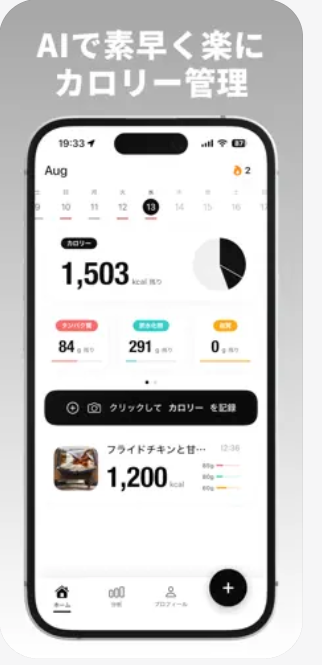
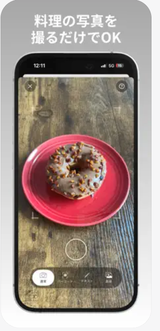
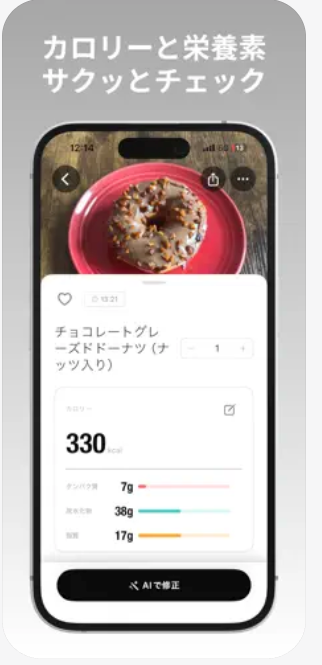
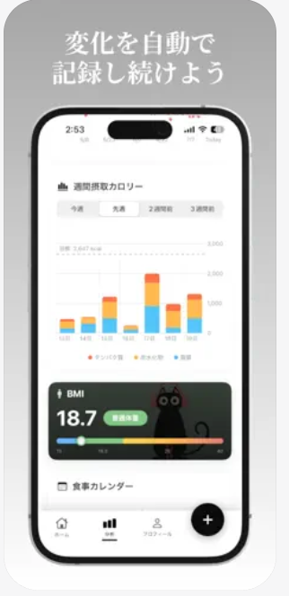
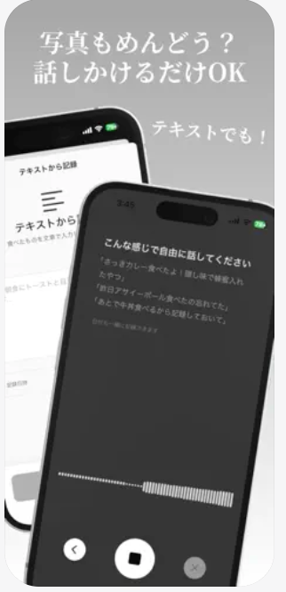

Features
主な機能
写真を撮るだけでOK
料理を撮影するだけでAIが品目を認識し、カロリーと栄養素（タンパク質・炭水化物・脂質）を自動算出します。
変化を自動で記録
週間の摂取カロリーやBMIの推移をグラフで可視化。食事カレンダーで毎日の記録を続けられます。
話しかけるだけ入力
写真がめんどうな時は、テキストや音声で食べたものを伝えるだけ。AIが内容を解析して記録します。
Screens
アプリ画面




